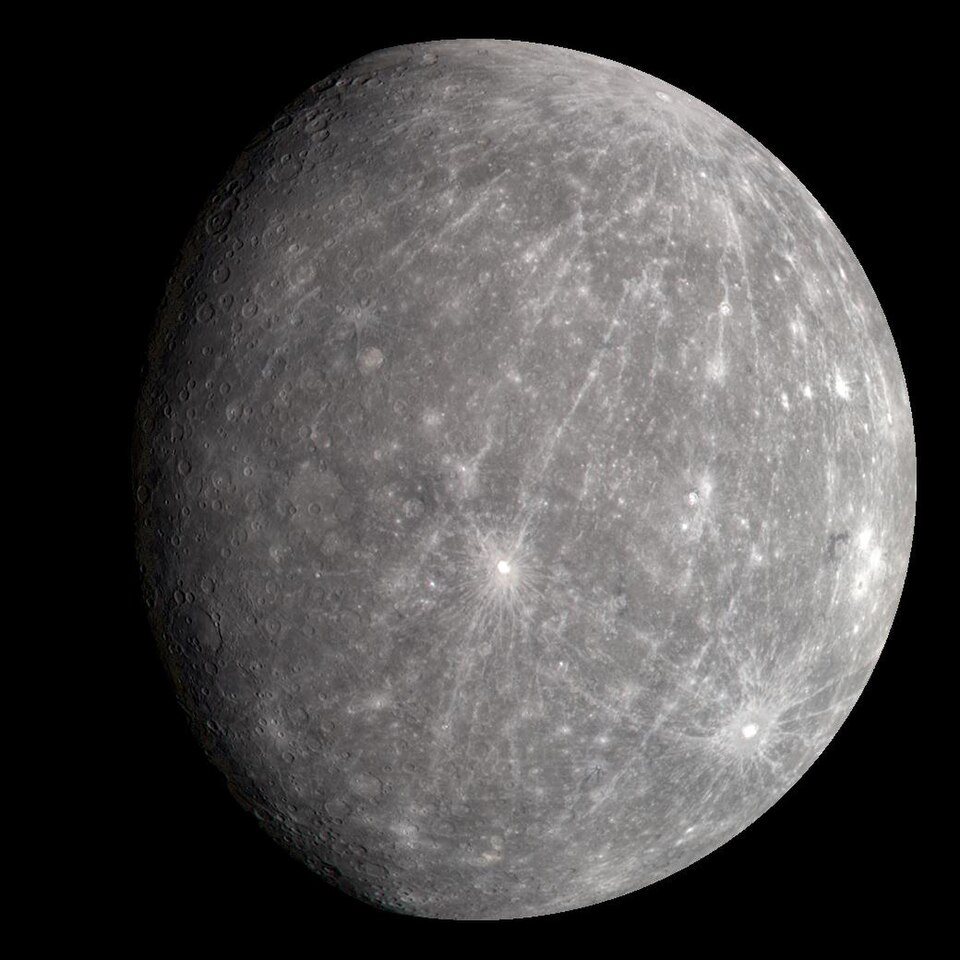

1번째 · 암석형
수성 Mercury
태양계에서 가장 작고 태양에 가장 가까운 행성이에요. 대기가 거의 없어 낮에는 뜨겁고 밤에는 매우 차가워요. 표면은 달처럼 크레이터가 많아요.
- 지름
- 약 4,879 km
- 태양까지 거리
- 약 5,790만 km
- 공전 주기
- 약 88일
- 자전 주기
- 약 58.6일
- 위성
- 없음
- 표면 온도
- 약 -180 ~ 430 ℃